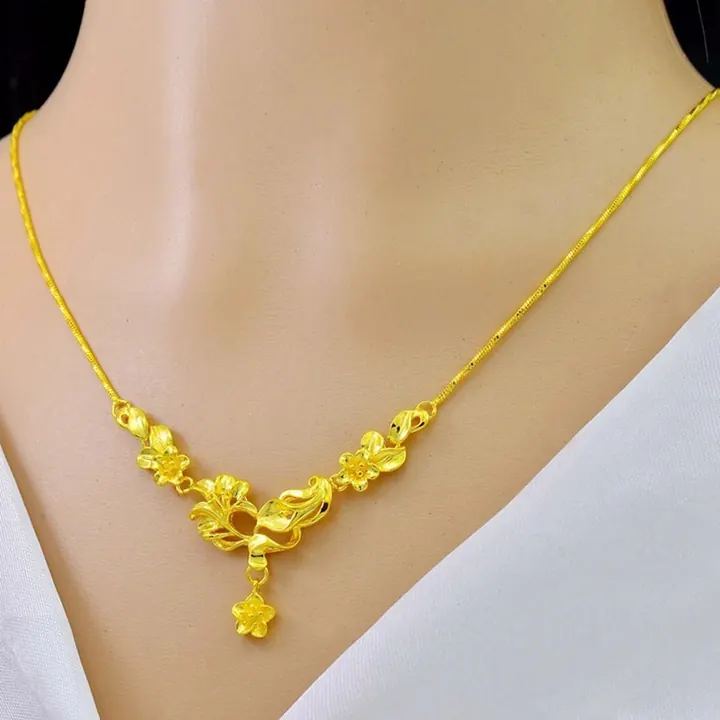

貴金屬投資：金條、金幣與 ETF
投資黃金不是「買金飾」——金條金幣 ETF 的選擇，決定了你是「投資」還是「買工藝」。

核心定義
貴金屬投資的四大管道：① 實體金條/金幣（保值之王、需保管）；② 黃金 ETF（追蹤金價、流動性佳）；③ 期貨/期權（槓桿高風險）；④ 收藏幣/金飾（含溢價，投資效率低）。核心問題：溢價與流動性。
「溢價」是關鍵詞：金條溢價最低（接近金價＋少量工費）、金幣略高、金飾最高（含設計工藝費）——投資黃金，金條金幣是效率之選；金飾是「佩戴消費」，不是純投資。
特徵與分類
| 管道 | 溢價 | 流動性 | 適合 |
|---|---|---|---|
| 金條 | 低 | 佳 | 保值儲蓄 |
| 金幣 | 中 | 佳 | 收藏投資 |
| ETF | 低 | 極佳 | 靈活投資 |
| 期貨 | 槓桿 | 極佳 | 專業投機 |
| 金飾 | 高 | 差 | 佩戴消費 |
黃金 ETF（如 GLD）追蹤金價、可即時買賣——沒有保管問題、流動性最佳；實體金條是「看得見的保值」——適合長期儲蓄與避險。兩者各有千秋，常見搭配：實體＋ETF 組合。
科學原理
黃金的避險邏輯：黃金是「價值儲存」——貨幣貶值（通膨）、地緣風險時，黃金傾向走強。它不產生利息（持有成本）——投資黃金是「保值」不是「生息」。
價格機制：國際金價（美元/盎司）是全球定價基準——各國央行儲備、ETF 持倉、工業需求（金少用於工業）影響供需。黃金的「避險」屬性，讓它在股市動盪時常逆向走強。
市場行情與保養建議
行情：金價長週期上行（貨幣超發＋央行購金）——短期波動由美元利率與避險情緒主導。投資策略：定期定額（分散時點）、實體與 ETF 搭配（保管與流動性兼顧）、避免高溢價金飾當投資。
提醒：黃金投資的「變現」要考慮回購價差（買賣價差 2-5%）——長期持有才划算。短期投機選 ETF/期貨，長期保值選金條。
常見誤區
金飾含高工藝費與品牌溢價——變現時按金價回收，工藝費全損。「買金飾投資」是效率最差的黃金投資。
黃金有波動（2011-2015 曾跌 40%+）——「避險」是相對屬性，不是保證。長期保值，短期仍會回調。
冷知識
近年各國央行（尤其新興市場）持續購金——「國家級避險」支撐金價。你買的黃金，和央行買的是同一種。
國際認證精煉廠（如 PAMP、Valcambi）的金條有公信力溢價——認證金條更容易變現。
反直覺觀點
利率低→持有黃金的機會成本低→金價傾向走強。黃金的價值，與「不生息」的環境正相關。
實體黃金要保險箱、要防盜防偽——「硬通貨」的保管，是最軟的環節。ETF 的流行，正是「保管痛點」的解法。